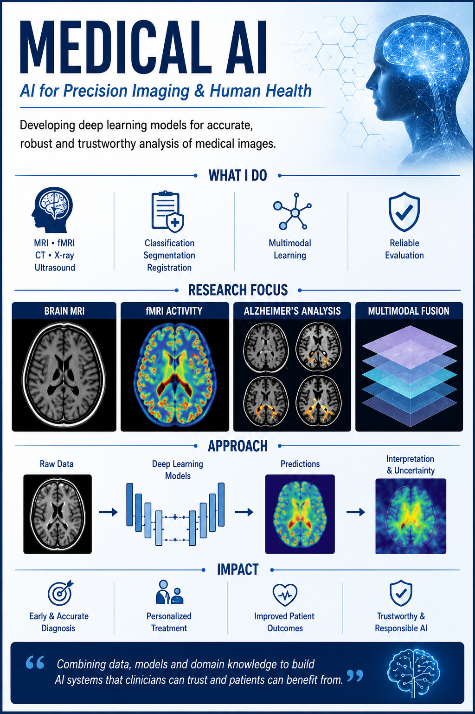
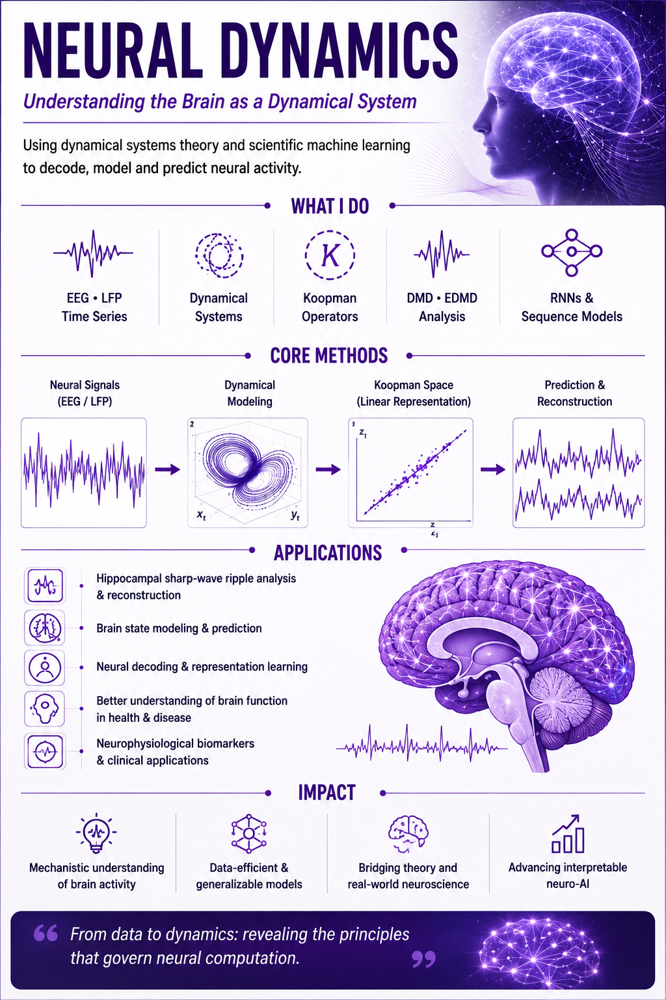
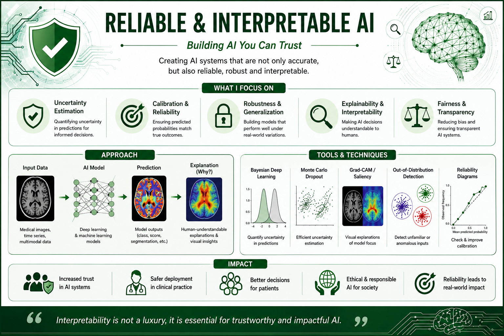

Medical AI
Deep learning for MRI, fMRI, CT, X-ray, and ultrasound, with emphasis on classification, segmentation, multimodal learning, and trustworthy evaluation.
Computational Scientist · Medical AI · Dynamical Systems
Developing reliable, interpretable, and dynamics-aware artificial intelligence for medical imaging and neural signals.
About
I am a computational scientist with a Ph.D. in Computer Science and Technology and a foundation in applied mathematics. My doctoral research focused on deep-learning methods for radiological image classification and segmentation. My current research extends this background toward dynamical-systems-based analysis of neural time-series data.
My long-term goal is to develop clinically meaningful AI systems that are not only accurate, but also interpretable, reliable, uncertainty-aware, and grounded in the dynamics of the biological processes they model.
Research Vision
Deep learning for MRI, fMRI, CT, X-ray, and ultrasound, with emphasis on classification, segmentation, multimodal learning, and trustworthy evaluation.
Reconstruction and analysis of EEG, LFP, and fMRI signals using Koopman operators, DMD, EDMD, recurrent networks, and scientific machine learning.
Uncertainty, calibration, robustness, explainability, generalization, and mechanistic understanding for models used in biomedical research.
My research brings together medical artificial intelligence, neural dynamics, and reliable and interpretable machine learning. Select a poster to explore each research direction in detail.

Deep learning and multimodal methods for medical-image classification, segmentation, registration, diagnosis, and clinically meaningful analysis.
Explore Medical AI
Dynamical systems, Koopman operators, DMD, EDMD, and sequence models for understanding, reconstructing, and predicting neural activity.
Explore Neural Dynamics
Uncertainty, calibration, robustness, generalization, explainability, and responsible evaluation for trustworthy artificial intelligence.
Explore Reliable AISelected Projects
Neural Signals · Koopman Methods
Investigating PCA-DMD, classical and sparse DMD, higher-order methods, and deep Koopman models for multichannel neural-signal reconstruction, cross-subject generalization, and event preservation.
Optimization Dynamics · Spectral Analysis
Studying how the local curvature of loss landscapes relates to Koopman spectra estimated from neural-network parameter trajectories across stages of training.
Multimodal Medical Imaging
Evaluating multimodal deep-learning models under severe paired-data limitations using subject-level leakage-safe validation and transparent reporting of instability and generalization.
Foundation Models · Biomedical Time Series
Exploring pretrained time-series representations and efficient downstream adaptation for biomedical signal tasks, including reproducible CPU-compatible workflows.
Publications
Anima Kujur, Coauthor One, Coauthor Two. Journal or Conference.
Methods & Tools
Contact
I welcome discussions in medical AI, neural dynamics, interpretable machine learning, and scientific machine learning.